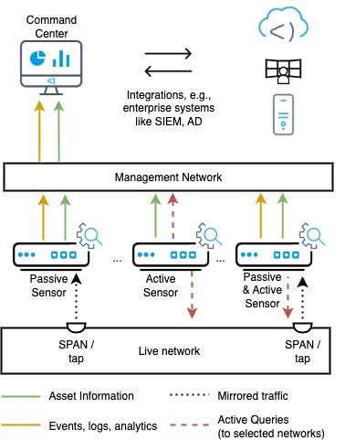

This guide describes how to use eyeInspect. This page introduces the eyeInspect components and the terminology used in this document.
An eyeInspect deployment consists of a Command Center and one or more Sensors, as shown in the figure below. Sensors can be Passive Sensors or Active Sensors.

The Command Center is a web-based application used for sensor and event management and provides visual representations and analysis capabilities for logs and events. The Command Center can interface with several third-party enterprise systems (for example, a SIEM system).
A Passive Sensor sends events and logs to the Command Center via the management interface, and uses a SPAN/mirroring port (that is connected to the ICS/SCADA network) to passively listen to the network traffic. Passive Sensors have several self-configuring detection engines and detection levels. Each Passive Sensor has one or more network monitoring ports and a management interface.
An Active Sensor remains inactive unless the eyeInspect user issues a direct command. When a command is issued, the Active Sensor sends controlled queries to assets selected by the user. Information retrieved in this way is then returned to the Command Center. An Active Sensor is connected to the Command Center via the management interface, and has an interface configured in the ICS/SCADA network, or uses the same network as management interface.
The Command Center, Passive Sensor, and Active Sensor can all be accessed via SSH for server management. For demo and testing setups, the Passive or Active sensor can be installed together with the Command Center in one application, called a Bundled Configuration.
In these Bundled Configurations, the Command Center allows traffic captures (PCAPs) to be replayed from the Command Center by means of PCAP Replay Sensors. A PCAP Replay Sensor provides the same functionality as a Passive/Active Sensor, with the exception that it cannot monitor live traffic. See Adding PCAP Replay Sensors for more information.